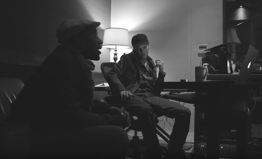

TIM BERGLING'S TRIBUTE PAGE

One of the Greatest DJ's Ever
Feeling my way through the darkness
Guided by a beating heart
I can't tell where the journey will end
But I know where to start
They tell me I'm too young to understand
They say I'm caught up in a dream
Well life will pass me by if I don't open up my eyes
Well that's fine by me
So wake me up when it's all over
When I'm wiser and I'm older
All this time I was finding myself
And I didn't know I was lost
So wake me up when it's all over
When I'm wiser and I'm older
All this time I was finding myself And
I didn't know I was lost